All guh variantsAlle guh-varianten
Every kind of guh in the Guhdex: the normal guh, the colour variants, the rare and unique guhs and the story guhs.
Elke guhsoort uit de Guhdex: de gewone guh, de kleurvarianten, de zeldzame en unieke guhs en de verhaalguhs.
Guh variantsGuhvarianten
In the Guhmension, about 1 in 11 wild guhs is a variant: another fur colour, or another shape. They only turn up there, keep their look when tamed, and their babies usually look like one of their parents. About 1 in 25 wild Guhmension guhs also already wears clothes (see Guh clothes). (Some say there's one more, very secret variant...)
In de Guhmensie is ongeveer 1 op de 11 wilde guhs een variant: een andere vachtkleur of een andere vorm. Ze komen alleen daar voor, houden hun uiterlijk als je ze temt, en hun baby's lijken meestal op een van hun ouders. Ongeveer 1 op de 25 wilde guhs in de Guhmensie draagt ook al kleertjes (zie Guhkleertjes). (Er schijnt nog een heel geheime variant te zijn...)
| NameNaam | KindSoort | RarityZeldzaamheid | AboutOver | |
|---|---|---|---|---|
 | Guh | Base guhBasisguh | Gewoon | A guh that sleeps (the emote Slapen, or napping in a guh nest) now closes its eyes: two soft curves with...De goede oude guh. Overal in de Guhmensie en in guhgrotten. |
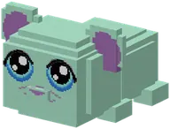 | Muntguh | Variant | Ongewoon | Fresh mint-green fur.Een frisse mintgroene guh. Ruikt naar tandpasta. |
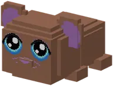 | Chocoguh | Variant | Ongewoon | Chocoguh is a kind of guh in Guhs. Its in-game text (Dutch): Chocoladebruin en extra knuffelig.Chocoladebruin en extra knuffelig. |
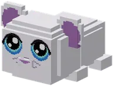 | Sneeuwguh | Variant | Ongewoon | Sneeuwguh is a kind of guh in Guhs. Its in-game text (Dutch): Een witte guh die van de koude toppen houdt.Een witte guh die van de koude toppen houdt. |
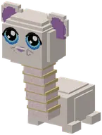 | Brontosaurusguh | Variant | Zeldzaam | Its head sits way up on a long, wrinkly neck with rubber bands around it.Een guh met een heel lange nek. Guh-saurus! |
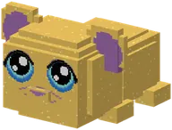 | Gouden Guh | Variant | Legendarisch | Glittering gold. The rarest of them all.Een glimmende gouden guh. Extreem zeldzaam! |
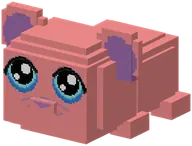 | Regenboogguh | Variant | Heel zeldzaam | Slowly changes through all the colours of the rainbow.Verandert steeds van kleur. Niemand weet hoe. |
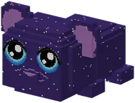 | Sterrenhemelguh | Variant | Heel zeldzaam | Fur like a night sky, with stars that glow in the dark.Zijn vacht is een nachthemel vol gloeiende sterren. |
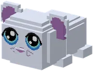 | Spookguh | Variant | Zeldzaam (alleen 's nachts) | See-through and pale. Only turns up at night — wild ones fade away at sunrise.Een doorzichtige guh die alleen 's nachts verschijnt. Boe-guh! |
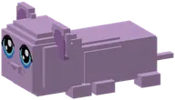 | Teckelguh | Variant | Zeldzaam | A sausage guh: an extra long body and six little legs.Een worstguh met zes pootjes. Heel lang, heel blij. |
| Brococolief | Special guhBijzondere guh | Uniek | Brococolief is a kind of guh in Guhs. Its in-game text (Dutch): De guh van het guhdorp.De guh van het guhdorp. Draagt natuurlijk roze. |
 | Enderguh | Special guhBijzondere guh | Zeldzaam (alleen op de Guhpieken) | A black and purple guh with dragon wings, little horns and glowing purple eyes.Enderguh: zwart-paars met drakenvleugels. Tem hem (1 op 8 knabbels, of 1 gefrituurde knabbel), zadel hem en... |
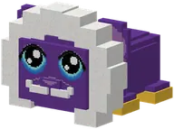 | Koningguh | Special guhBijzondere guh | Uniek (guhkasteel) | On the throne sits the Koningguh: always a giant (about 2.5 blocks), royal purple with golden socks, a fluffy...De Koningguh op zijn troon in het legendarische guhkasteel. Koningspaars, witte manen, een snorretje. |
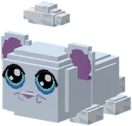 | Wolkguh | Special guhBijzondere guh | Uniek (zwevende guh-eilandjes) | On the floating islands sits the only Wolkguh in the world: white and fluffy with a little cloud on its head.Pluizig, met een wolkje op zijn hoofd: valt hij, dan zweeft hij. Alleen op de zwevende eilandjes. |
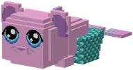 | Zeemeerguh | Special guhBijzondere guh | Zeldzaam (Guhzee, Diepe Guhzee) | In the Guhzee and the Diepe Guhzee you now meet a wild Zeemeerguh much more often (about three times as...De Zeemeerguh: een guh met een vissenstaart! Zwemt supersnel. Tem hem, zadel hem en rijd onder water. |
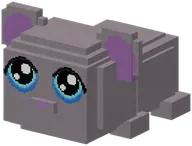 | Magere guh | Special guhBijzondere guh | Zielig (in de cellen van de Knabbelkelder) | Magere guh is a kind of guh in Guhs. Its in-game text (Dutch): Een grauwe, magere guh die de Mika's al...Een grauwe, magere guh die de Mika's al maanden geen knabbel gaven. |
 | Vahoege Enderguh | Special guhBijzondere guh | Legendarisch (het Guheinde) | Vahoege Enderguh is a kind of guh in Guhs. Its in-game text (Dutch): De bevrijde Enderguh van Opper-Mika:...De bevrijde Enderguh van Opper-Mika: goud en roze, met drakenvleugels. |
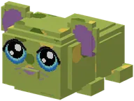 | Kaasmoerasguh | Special guhBijzondere guh | Alleen in het Kaasmoeras | A new guh variant: green-yellow spotted, as if it rolled through the mud (it did).Groen-geel gevlekt, alsof hij door de modder heeft gerold (heeft hij ook). Woont alleen in het Kaasmoeras. |
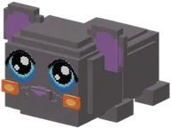 | Asguh | Special guhBijzondere guh | Ongewoon (alleen in het Asdal) | A new guh variant, only in the Asdal: grey and sooty, with glowing cheeks.Een grijze, roetige guh met gloeiende wangetjes uit het Asdal van de Barbecuether. Vuur doet hem niks. |
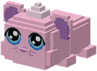 | Pluisguh | Special guhBijzondere guh | Ongewoon (alleen in het Knuffeldal) | A new guh variant, only in the Knuffeldal (about a third of the wild guhs born there): extra fluffy and pink,...Een extra pluizige roze guh met een pluizig kuifje en pluizige wangetjes. |
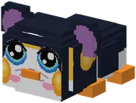 | Pinguh | Special guhBijzondere guh | Ongewoon (alleen in de Guhpolder) | A guh in a penguin suit! About half of the wild guhs in the Guhpolder are a Pinguh (a new variant after the...Een guh in een pinguinpakje! De helft van de wilde guhs in de ijskoude Guhpolder is een Pinguh. |
 | Baltoguh | Story guhVerhaalguh | Eén per speler, na het verhaal van Nomguh | Half guh, half wolf: grey fur, pointy wolf ears, a bushy tail and a real guh snoet. A bit of an outsider.Half guh, half wolf: een grijze vacht, spitse wolfsoortjes, een lichte buik en een echte guhsnoet. |
 | Guhtwo | Story guhVerhaalguh | Eén per speler (na het verhaal van het kloon-eiland) | Lilac grey with a purple tail with a bulb and a tube from his head to his neck, but with fat guh cheeks and...Professor Knabbelkloon wilde een guh klonen die dubbel zoveel kaasknabbels kon eten. |